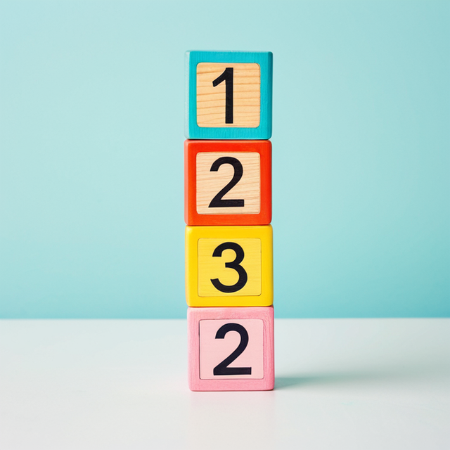
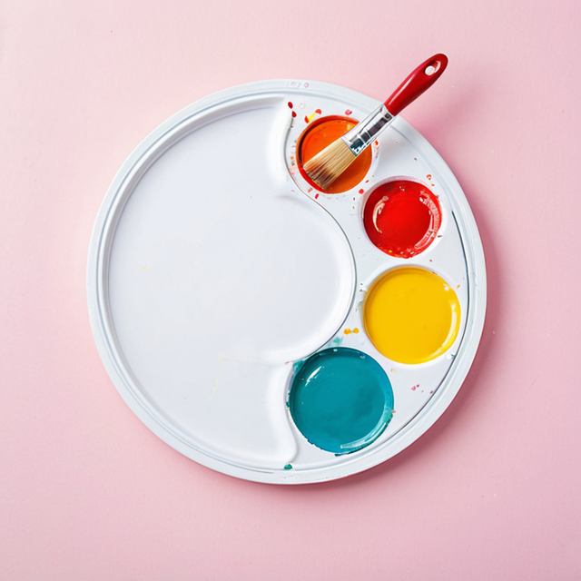
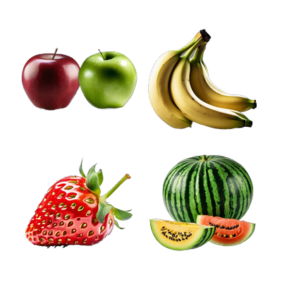

語言對照表
共 49 個主題 · 點卡片看內容 · 內容頁點 🔊 聽發音
基本概念

數字
44 個詞
形狀
16 個詞

顏色
14 個詞
方位
9 個詞
時間
月份
13 個詞
季節
5 個詞
星期週
8 個詞
時段
5 個詞
時間
25 個詞
學習
科目
14 個詞
文具
27 個詞
電腦硬體
19 個詞
實驗器材
10 個詞
生活用品
場所
26 個詞
運動
42 個詞
娛樂
22 個詞
服飾
29 個詞
包裝
12 個詞
工具
12 個詞
零件
20 個詞
餐具
12 個詞
電器
33 個詞
食物

水果
50 個詞
蔬菜
0 個詞
飲料
16 個詞
調味料
0 個詞
速食
0 個詞
甜點
32 個詞
生鮮食品
15 個詞
夜市小吃
18 個詞
日本料理
0 個詞
交通與設施
交通工具
84 個詞
公共設施
21 個詞
遊樂場設施
6 個詞
遊樂園設施
9 個詞
居家
居家空間
14 個詞
家具
13 個詞
自然生物
植物
9 個詞
動物
38 個詞
鳥類
32 個詞
爬蟲類
7 個詞
魚類
20 個詞
昆蟲
25 個詞
身體
五官
5 個詞
體內器官
11 個詞
其他
恐龍
17 個詞
星球
12 個詞
古董
12 個詞
樂器
0 個詞
※ 表格內容直接對應原本的 Google 試算表，你在試算表改資料，這裡重新整理就會跟著更新。